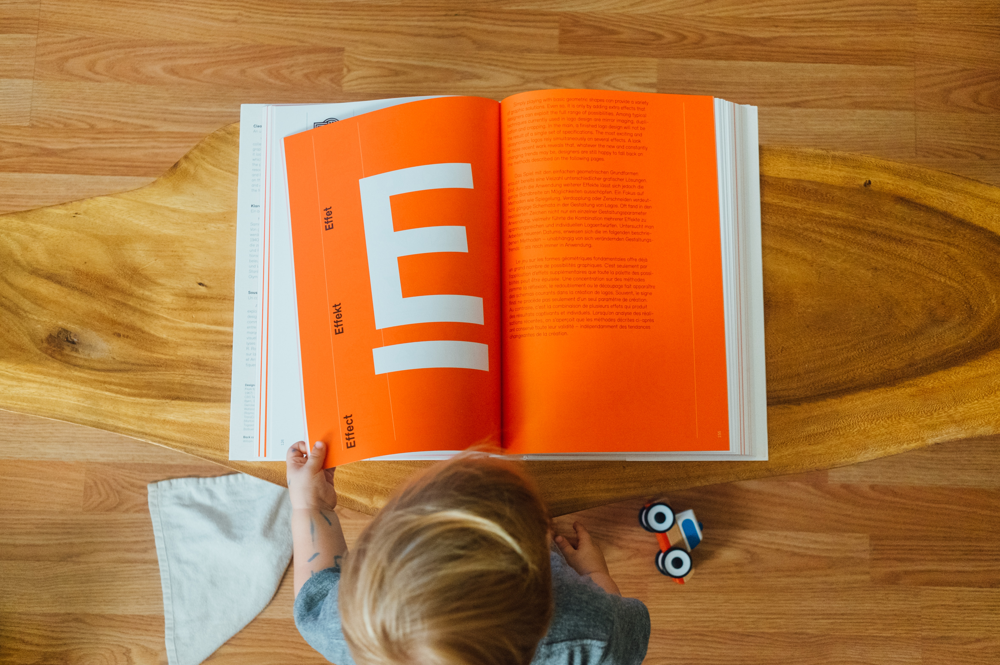

My Story
Growing up, the only thing I wanted to be was a programmer. One of my moms was a programmer and she would sometimes tell me about her work, showing me diagrams of program logic and databases, letting me see some of her code, and once or twice letting me listen in on her meetings. However, in my family, I had a role and a place. Because I was female, I was told how I would live, what I would do, and what I would like. When I was about seventeen, I was told me to my face that because I was female, I was bound to the family and would abide by their words. However, if only I had been smarter or more intelligent, perhaps an option would have been to be a programmer despite all that. However, in comparison with my brother who had been identified as a genius in math when he was twelve, offered to attend college out of elementary, and my lack of "common sense" and having too much creativity, so I figure as I seemed often incomprehensible and weird to the one who said it, I was told by the mom whose occupation I admired that I was neither smart enough nor had the right mind for becoming a programmer.
Even though I took programming classes as part of the requisites for pre-engineering and informatics, and loved it, I stayed away from programming and learned mostly through trial and error on my own. Regardless of compliments and encouragement from my peers and instructors, I always compared myself in a way that would discourage me. I tried to convince myself and others that I would become a designer, that it was right for me, and because of my interests and hobbies, it was not hard for others to believe me. Whether I believed myself did not matter as for the most part, I focused on staying on track, graduating, all the while afraid of losing the tenuous acceptance I received from my family until ultimately, I ran away.
Due to the sudden death of my father when I was five and the resulting environment of my upbringing, I developed and grew up with PTSD, and since no one in my family acknowledged me, I learned to hide and bear my suffering to debilitating extremes. I developed a modus operandi of being kind, eccentric, and informative to strangers, only to withdraw as I got to know them. Being with people makes me very sick, and before, though I tried to avoid being with others any way I could, I was constantly forced to and left alone to "deal with myself" as I would say, so by the time I became an adult, I seemed to others to be intelligent, highly capable and adaptable, and downright awesome to work with.
Perhaps it would have all worked out if I hadn't run away to China. Given everything that happened, there's a part of me that thinks and believes it wouldn't have turned out so bad if I had stayed. But the truth that I've had to face is that "No. I would have broken myself down again and again anyway because that was what I had come to believe is required to survive and be an adult." When I went to China, as many good people I met and friends I made, I encountered trauma after trauma, one toxic environment or situation after another, and when I came back to the states, I carried with me a perpetual haze of exhaustion and fear.
When I came back to the states in March 2020, I had burned out so much, been scared and sick so much, that I was tired of being and living. I told my family things to reassure them, but as the months went on, it became clear something was wrong with me, except since there was something wrong at home already, I went overlooked. It wasn't until the months I stayed in my childhood home with all three of my moms, my grandparents, visiting aunts and uncles, that I reached my limit. Constant hallucinations, nightmares, flashbacks, intrusive memories, my shame and the perceived but unconfirmed disappointment from my moms, I stopped eating and slept as much as I could during the day to bear through the waking nightmares.
I finally sought help, even as my family disapproved and was skeptical of therapy. I was even warned against it and though that warning was justified when I became homeless, I didn't fail to see how everything was connected, what might be good for me and what had proven again and again to be bad. For the last two years, I have been receiving therapy and been monitored monthly by doctors. The first year or so, I had therapy twice a and met with my doctor and psychiatrist every two to three weeks. By chance, I found my latest job: a clerk at a paper goods store. It was only once a week and then twice a week for five hours at time with lulls between customers lasting up to an hour. The store was quiet and not too bright or crowded with people and stuff. So I was able to work there for two years.
Then the space was bought and the store closed, and I was left in the same situation as before. The only difference was two years of therapy down, monitoring my health, and improved living conditions. I would have to find another job, most likely part-time because of my condition.
Back when I was staying in the homeless shelter, I tried to learn programming through Codecademy, only to stop because of the cost. Months before the store closed, we were notified that it would close, so I tried again to learn programming, this time through a site called Zero to Mastery, which had expanded from a course on Udemy into a Linkedin-accredited school with career paths and multiple instructors. I knew Zero to Mastery back from when it was just a course on Udemy because I had tried it my second year in China, but back then, I had neither the time, energy nor mental capacity for it. When I tried to learn from the courses at Zero to Mastery, I found myself